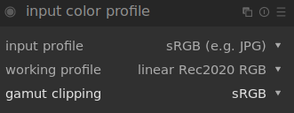

II.L - Color management: Darktable¶
Darktable is a free and open source photo editing software, extremely complete and professional; the color management is very complete.
L.1 - Input and workspace¶
The color workspace is set per file, at the same time as the input, via the module “input color profile”.

The configuration is very simple:
- input profile is used to define the profile of the image on which we work; in the case of an image jpeg for example, we will choose sRGB.
- working profile is the workspace; we prefer a space with a wide gamut *, and linear. Darktable proposes the most useful and common ones, like the Rec. 2020, Adobe RGB or the prophoto dedicated to photo editing.
- gamut clipping is an interesting option for displaying on the image the areas whose colors are outside the gamut of the given space; the output space is usually chosen here.
To activate the gamut clipping alerts you have to activate the option via the button under the image:
L.2 - Output¶
The output is easily adjusted via the “output color profile” module.
L.3 - Soft-Proofing¶
Soft-proofing can be activated and regulated with the buttons under the image.
A right click gives access to the settings.
- softproof profile defines the simulated/activated space for the soft-proofing. It is there that one finds the specific profiles ICC for the impression which one would have added (see below).
- display profile allows you to modify the screen space; in general, you can leave “system display profile” (this is the only one that will take into account the possible calibration of the screen). Otherwise you should always choose the normal screen space (sRGB in general).
- preview display profile is the space of the possible second image preview window, in case it is on a second different screen.
- histogram profile defines the space used by the histogram and the eyedropper of Darktable.
You can add your own output and proofing profiles by adding the ICC files in the color/out subfolder of the Darktable installation (or the $HOME/.config/darktable/ folder under linux).